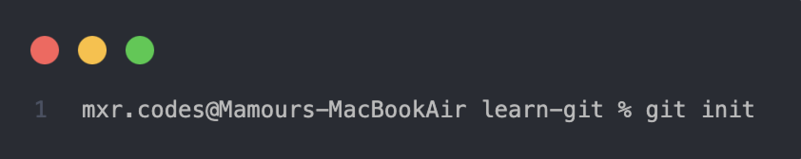
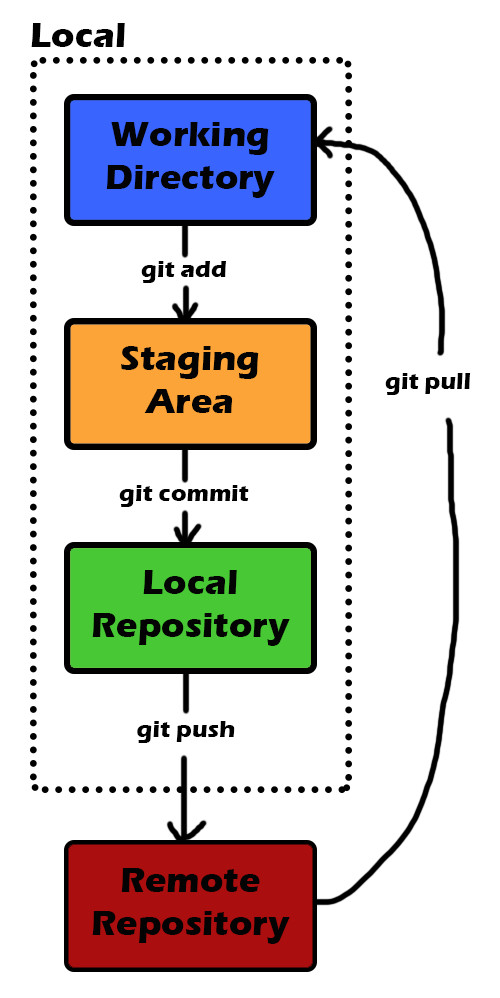
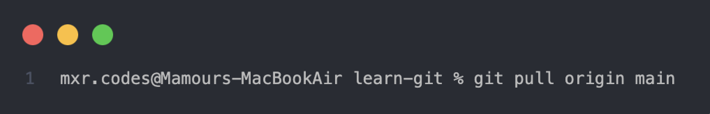

Git est l'outil par excellence que tout développeur doit maîtriser. C'est 36 millions d'utilisateurs et
90% de part de marché. Si t'es pas parfaitement au point sur cette merveille, ça vaut le coup d'investir
cinq minutes de ton temps.
Il était une fois
Git est l’outil par excellence que tout développeur doit maîtriser. C’est 36 millions d’utilisateurs
et 90% de part de marché. Si t’es pas parfaitement au point sur cette merveille, ça vaut le coup
d’investir cinq minutes de ton temps.
Il était une fois
Nous sommes en avril 2005, et le célèbre Linus Torvald est à fond sur son projet de cœur : Linux.
Il y bosse depuis 1991, et tu t’en doutes, le projet est colossal. Il y a une quantité massive de
code. Et encore plus de personnes qui bossent dessus.
Pour organiser tout ce bazar, Linus
utilisait jusqu’ici un système de gestion de versions nommé BitKeeper. Le
souci avec BitKeeper, c’est que c’est un logiciel propriétaire. Ça, déjà, ça agace pas mal de monde
dans la communauté open source autour de Linux. En plus, la version gratuite impose des limitations
franchement lourdes. Comme si ça ne suffisait pas, du jour au lendemain, la version gratuite de
BitKeeper est retirée.
Là, Linus Torvalds pète un câble et décide de coder lui-même un nouveau système de versionnage. Le
développement FULGURANT de Git allait bientôt démarrer. Le 3 avril
2005, Linus se lance dans la création de Git. Le 6 avril 2005, il envoie un mail bien remonté pour
annoncer qu’il bosse sur une alternative. Le 18 avril 2005, les premiers merges de branches sont
opérationnels ! Le 29 avril 2005, Git commence à être utilisé dans certaines parties de Linux. Et le
16 juin 2005, Git gérait toute la version 2.6.12 de Linux.
Il y bosse depuis 1991, et tu t'en doutes, le projet est colossal. Il y a une quantité massive de
code. Et encore plus de personnes qui bossent dessus.
Peu de temps après, Linus décida de filer les clefs à Junio Hamano qui en fit une version 1.0
déployée le 21 décembre 2005. Aujourd’hui, Git est absolument partout.
À quoi sert Git ?
Git est un système de contrôle de version open source. Concrètement, c’est un outil qui te permet de
traquer tous les fichiers de ton projet. Chaque modification de fichier
est alors détectée par Git et versionnée dans une version instantanée. Un historique de modification
va être disponible sur ton projet. Tu vas pouvoir le consulter et pourquoi pas même revenir en arrière dans le temps !
Versioning
Chaque modification est versionnée dans une version instantanée
Historique
Consultez l'historique complet des modifications
Collaboration
Travaillez en équipe sans conflit

Git est un outil qui va te permettre de savoir qui a touché à quel fichier, quand et comment.
Imagine, t’as 2000 fichiers et 5 développeurs qui travaillent en équipe dessus.
-
Comment tu sais qui a fait quoi et quand ? Le versioning de Git va te permettre de le savoir.
-
Comment t’es sûr que les développeurs ne se gênent pas en touchant les mêmes fichiers en même
temps ? Encore une fois, Git à la rescousse avec son système de branches.
Chaque développeur va pouvoir travailler en parallèle avec leur propre copie du projet sur une
branche personnelle.
Une fois leur travail fini, les copies de travail seront fusionnées !
En plus de ça, contrairement à certains de ces concurrents, Git est décentralisé. Ça veut dire que
l’historique des fichiers est présent dans chacune des machines où se trouve le projet. Ce qui diffère
d’une architecture centralisée où tu peux pas faire grand-chose sans un seul serveur qui gère tout.
Bon, c’est peut-être pas encore tout à fait clair, regardons comment ça marche !
Comment ça marche ?
D'abord, il faut installer Git sur ta machine. Ensuite, tu vas pouvoir initialiser un dépôt Git dans ton
projet. C’est ce qu’on appelle un « repository ». C’est là que Git va
stocker toutes les versions de ton projet.
Pour se faire, rien de plus simple:

La première chose à comprendre avec le fonctionnement de Git c’est qu’il fait des
instantanés (snapshots en anglais) de ton projet pour le versionner. Là où les autres
systèmes de versioning comme Subversion et Perforce vont faire des diffs sur chaque fichier. Cette
différence est importante. Elle va permettre à Git de se distinguer côté performance et travail de
développeur en parallèle via
les branches !
Secondes choses à bien comprendre avec Git : les zones de travail. Il y a
plusieurs zones où les fichiers de ton projet vont "vivre" dans Git. C’est super important de comprendre
cette partie pour ne pas être perdu.
On trouve trois zones bien distinctes en local sur ton poste de travail.
-
Zone de travail (Working Directory) : c’est là où ton dépôt git est
initialisé et que tes fichiers vivent. C’est dans cette zone que tu touches à tous tes fichiers
pendant que tu bosses. Une fois que tu veux versionner une version de ton projet, tu vas alors taper
la commande « git add » pour passer un fichier à la zone suivante.
-
Zone de transit (Staging Area) : la zone de transit est un endroit pour
désigner les fichiers que tu veux versionner. Tu peux voir la commande « git
add » comme une manière de mettre des objets dans un carton. Une fois que tu as désigné
tout ce que tu voulais mettre dans ce carton, il sera prêt à être envoyé au dépôt avec la commande
« git commit ».
-
Dépôt local (Local Repository) : la zone de dépôt c’est là que les
fameux instantanés de ton projet sont versionnés et stockés. Le truc important à comprendre c’est
qu’une référence de version est créée pour chaque commit que tu fais. Chaque commit est donc une
version de ton projet unique qui va vivre dans le dépôt et que tu pourras consulter/comparer quand
tu voudras !
Jusqu'ici, on est resté sur ton poste de travail. Une fois que tu as versionné comme tu le voulais, tu
pourras partager ton travail en le poussant vers le dépôt distant avec un « git
push ». Avant de t'expliquer tous ces trucs, petit schéma !
Zones de travail Git
Working Directory
Zone de travail où vivent vos fichiers
Staging Area
Zone de transit pour les fichiers à commiter
Local Repository
Dépôt local où sont stockées les versions

Les commandes essentielles
Initialise un nouveau dépôt Git
Ajoute tous les fichiers à la zone de transit
Crée une nouvelle version avec un message
Envoie les modifications vers le dépôt distant
Récupère les modifications du dépôt distant et les fusionne dans la branche locale.
Ce sont quelques commandes que tu vas utiliser tout le temps et c’est le flow que tu vas avoir en
permanence. Maintenant, tu vas forcément bosser avec d’autres développeurs. Pour bien gérer ça, il va
falloir que tu utilises les branches.
Voyons les commandes✨
Pour installer Git, tu trouveras ton bonheur ici. Pour la petite démo, on va imaginer un scénario. Ça va
pas être dur à imaginer : c’est ce qui va t’arriver en permanence.
- Mettre à jour la branche principale
- Faire une branche pour travailler dans ton coin
- Faire plusieurs commits
- Réduire ces commits en un seul commit
- Push tes changements sur le dépôt remote
Je pars du principe que tu as déjà un dépôt Git en local que tu as cloné d’un dépôt distant via la
commande git clone .
Commençons par mettre à jour la branche principale:
master

On utilise la commande git pull pour mettre à jour notre dépôt local avec les
updates du dépôt distant. Ensuite, on crée une branche.

Grâce à la commande git checkout -b on va créer une branche (une copie de la
branche principale) et se placer dessus automatiquement.
J’utilise le nom "ma-nouvelle-branche" ici.
Quand tu bosses avec Git il est également conseillé de commit fréquemment. C’est ce qu’on va faire
ici.

La commande git status te permet de vérifier l'état de ton dépôt Git en
local, en affichant les modifications en cours, les fichiers en attente de commit, et si ta branche est
synchronisée avec le répo distant (remote).

Et voila, tu as les bases pour utiliser Git partout!
Workflow Git
1
Mettre à jour
Commencez par mettre à jour votre branche principale
2
Créer une branche
Créez une nouvelle branche pour vos modifications
git checkout -b ma-feature
3
Commiter
Faites vos modifications et créez des commits
git add .
git commit -m "feat: nouvelle fonctionnalité"
4
Pousser
Envoyez vos modifications vers le dépôt distant
git push origin ma-feature